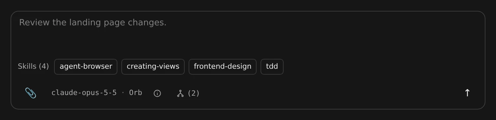
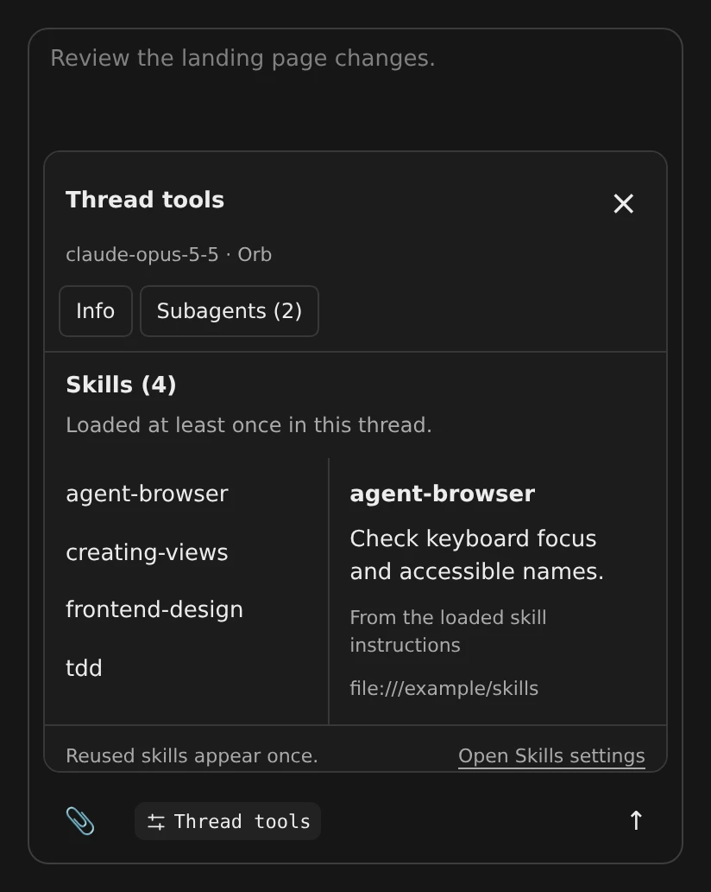
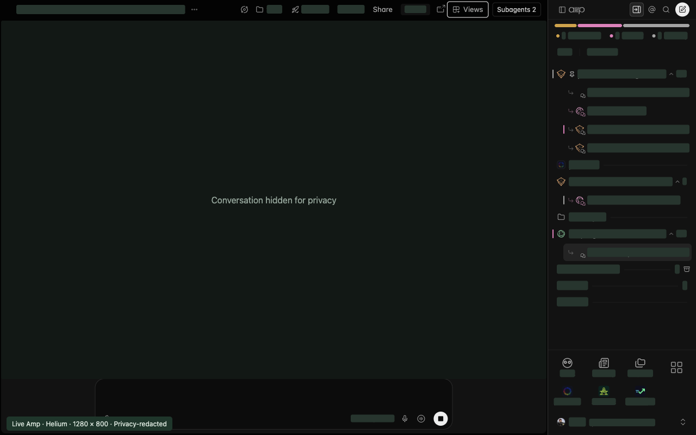
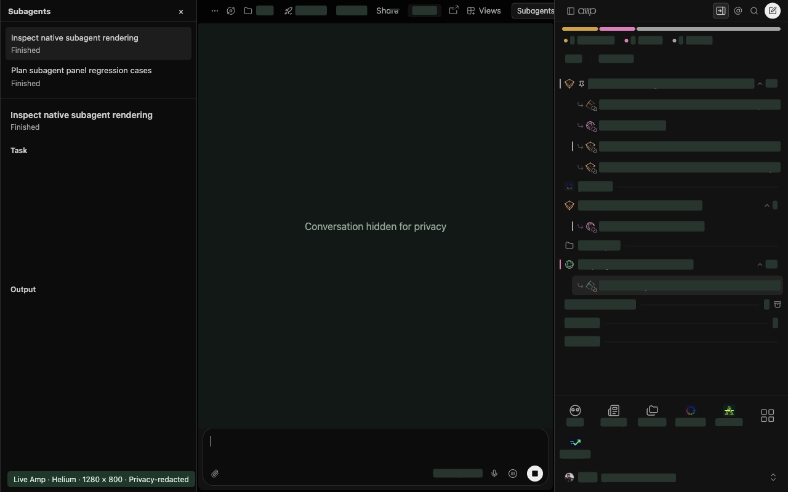
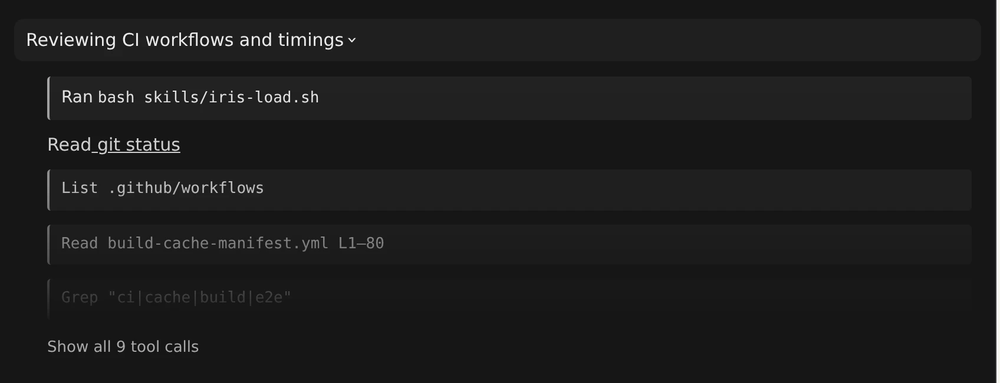

Put navigation where you want it. Read threads side by side,
follow subagents and thread messages, and keep model and runner
details close to your draft. An independent, open-source Chrome
extension for Amp.
Historical capture of a real Amp session in Helium,
1681 × 1000, October 26, 2026. Private content is redacted.
The 1.4.2 source moves the floating info orb shown here into
the composer toolbar.
Navigation on the right
Child threads indented
Earlier thread info card
Model and runner in the composer
Small changes. More room for your work.
Pick a side without switching anything else off. Configure the
features in the toolbar popup or Options, or use the sidebar
settings gear in the 1.4.2 source preview. Source-preview changes
below are not yet in the store's 1.4.1 release.
The thread's context, beside your draft.
In the 1.4.2 source preview, successfully loaded
skills appear above the toolbar, each listed once. Hover or focus
a name for an instruction excerpt and location when available. Click
to open Amp's Skills settings in a new tab without losing your draft.
See the model, explicit effort setting, and runner name or
Orb beside Info,
Subagents, and, when messages exist,
Messages. Click Info for the thread's title,
project, mode, visibility, runner, and working directory when available.
When space gets tight, Thread tools folds these
controls into a popover above the toolbar. Your draft,
attachments, and send button stay available. In a roomy composer,
Skills opens the same panel. Info, Subagents,
and Messages opened from Thread tools have a Back
button to return to it.
Desktop only. A + on the skill count means history is incomplete.
Read-only threads keep Info and Subagents in the title bar.

Roomy composer. Actual extension in a local fixture with synthetic data, not live Amp.

Narrower composer, same local fixture. The popover opens above its button, not as a modal. Captured November 9, 2026.
Put navigation on your side.
The sidebar starts on the right. Click the pinned extension icon
for settings. The sidebar header arrow and
Move sidebar to the right setting switch
placement only. The toolbar's R/L badge shows your saved side.
In right mode, drag the divider to set your width. Double-click to
restore Amp's width. Your choice stays put across tabs and browser
restarts.
Child threads indent by depth on either side. Switching sides
keeps your other settings.

Earlier v1.1 layout in live Amp, Helium, 1280 × 800; October 24,
2026. Private content hidden. In v1.2 the header arrow switches
sides, not all features.
Two threads. One workspace.
Keep a reference conversation beside the thread you're working
in. Drag a sidebar thread to the left or right edge of the
conversation to open a second pane inside the same Amp page,
not the browser's Split View. Both threads keep Amp's native composer.
Prefer the keyboard? Focus a sidebar thread and press
Alt+Shift+Left or Alt+Shift+Right.
Drag the divider to resize, use its arrow keys, or double-click
to reset to an even split. Drag the same thread to the other
edge to move its pane without reloading it.
Use the pane's close button before opening a different thread.
Closing or reloading ends the split; it isn't saved. New splits
need a window at least 768px wide. Existing panes stack vertically
below that width.
Live Amp in Helium, October 27, 2026, at 1681 × 1000. Captured
with the installed extension. Conversations, private thread and
project names, file name, and runner details redacted.
Give subagents their own reading room.
Open Subagents from the desktop composer toolbar
in the 1.4.2 source preview
for a compact agent list opposite navigation. Hover or focus
Task or Output to preview a
wider reading sheet. Click to pin it open.
Read headings, lists, links, code, and tables as formatted content,
rather than raw text. Formatted reading sheets are already in 1.4.1.
Files and Changes can stay alongside the list; narrower desktop
windows use an overlay. Escape closes the sheet first, then the
panel.
View original reveals the selected activity
inline, with smooth scrolling and highlighting.
Compact inline summaries remain on mobile and when the panel is
off. Click one to expand Amp's original content.

Earlier v1.1 layout in live Amp, Helium, 1280 × 800; October 24,
2026. Private content hidden. Current Task and Output open in
separate formatted sheets. The 1.4.2 source moves the Subagents
control into the composer.
Scan the work. Open the details.
Long tool-call sections start with a fading preview of the first
five calls. Click the preview or status header to reveal all
loaded calls. Individual outputs stay closed until you open them.
The 1.4.2 source preview adds a
Fade long tool-call sections setting. With it
enabled, long Bash commands show eight displayed lines, including
wrapped lines. Show full command reveals the
rest; Show less folds it back.
Bash, Read, Grep, and List activity use readable code blocks,
preserving full commands, search patterns, and file line ranges.
Read, Grep, and List show Amp's summaries, not invented shell commands.
Turn fading off to show all calls and complete commands. Turn
Expand tool-call sections off to keep sections
collapsed as in Amp until you open them.
Works on either sidebar side and at narrow widths. Expansion is
temporary; only your preferences are saved.

Actual 1.4.2 extension in a local fixture, November 9, 2026.
Synthetic tool calls, not a live Amp session.
Follow messages between threads.
The Messages control appears only when threads have exchanged
messages. Read each message, see delivery status and attachment
counts, or jump to its original transcript entry. The
1.4.2 source preview puts the newest messages first.
This panel reads messages; it never sends them.
Keep Spaces conversations separate.
In the 1.4.2 source preview, each visible
coordinator or worker gets its own context, Info, Messages,
Subagents, and tool previews. Switching workers clears the
previous worker's controls. Space workers aren't counted as Task
subagents.
Put a date on the conversation.
The 1.4.2 source preview can add full calendar
dates to Amp's message times. Enable Amp's
Always Show Timestamps, or hold Option or Alt
to see them. The date option is off by default and makes no extra
requests. Amp controls when timestamps are visible.
Keep tools opposite navigation.
Files, Changes, Terminal, Desktop, and Portal move left in
right-sidebar mode. Their dividers resize in the direction you
drag.
Less hunting. More reading.
Right-sidebar thread cards open to the left on hover or keyboard
focus. Tool rows get a subtle tint; active subagent dots pulse
gently, or stay still with reduced motion.
Keep the settings you choose.
Sidebar placement, panel choices, and the saved right-side width
apply across open Amp tabs and survive restarts. Preferences stay
in the local browser or app profile, not synced between devices
or shared between Chrome and the Windows app.
Switching sides doesn't switch off other features.
Settings without a browser toolbar.
In the 1.4.2 source preview, the gear in Amp's
sidebar header opens the same settings inside the page. It stays
available even if you hide the placement switch. Each of the
twelve checkboxes is independent; all default on except full
timestamp dates. Split panes, inline summaries, and activity
styling have no separate checkbox. Desktop only.
A small install. A familiar workspace.
Version 1.4.1 is available on the
Chrome Web Store.
To try the unreleased 1.4.2 source, follow these steps to load it
locally in Chrome.
Downloads main from GitHub, currently the unreleased 1.4.2
preview, not the store package. No build step needed.
Using the native Windows app instead?
Follow the experimental WebView2 setup.
It loads the source without patching Amp. There is no verified
equivalent for the native Mac app.
Unzip the source into a permanent folder. Inside it, find the
amp-configurable-defaults-main folder containing
manifest.json. Keep that folder; Chrome loads the
extension from it.
Load it in Chrome.
Type chrome://extensions into Chrome's address
bar. Enable Developer mode, click
Load unpacked, and select the folder
containing manifest.json, not the ZIP. Keep
Developer mode on. Chrome may show a developer-mode warning.
Pin it. Refresh Amp. Pick a side.
Pin amp configurable defaults from Chrome's
Extensions menu. Refresh existing Amp tabs, then click the
pinned icon to customize each feature in the popup.
Right-click the icon and choose Options for
the full settings page.
A few things worth knowing.
Just a local extension. Your Amp account stays yours.
Is this an official Amp extension?
No. This is an independent, MIT-licensed project. It is not
affiliated with or endorsed by Amp. The Amp name identifies the
service it works with.
What does it store or read?
The extension needs local storage and access to ampcode.com only.
Chrome may describe that access as reading and changing site data.
The 1.4.2 source uses thirteen local preferences, including the
new skills and fading options. The store's 1.4.1 release uses
eleven. Preferences aren't synced between devices. Subagent
reading sheets use content Amp has already rendered; they don't
fetch older history or save prompts and results.
When the model label or Info is enabled, the extension requests
the open thread's same-origin page data using your Amp session.
Messages reads the returned page of incoming and outgoing messages,
delivery results, and other thread titles. It checks on transcript
changes, at most every five seconds while visible, and refreshes
every five seconds while open. It does not send messages or fetch
older message pages.
The 1.4.2 skills feature also reads older and newer transcript
pages to find successful skill loads and collapsed-turn summaries.
It doesn't fetch skill files or run their instructions. These
features keep thread data in memory, not persistent storage.
The optional timestamp dates only read times Amp already renders.
Drag-to-split loads a live
Amp page with its normal network requests. A temporary, tab-scoped
rule removes framing and Content Security Policy headers only for
that embedded thread URL; this also relaxes script protections
inside the frame. There are no analytics.
The Windows app can load the unpacked extension through an
experimental WebView2 configuration. This is not an official
Amp install path. The sidebar and in-app settings were verified;
not every extension feature has been tested in the native app.
Read the setup, limitations,
and undo instructions.
No equivalent setup has been verified for the native Mac app.
The Windows method depends on WebView2 and the Windows registry,
not a portable Amp preference. On Mac, use desktop Chrome or a
Chrome-installed PWA. Mobile Chrome does not support extensions.
Below 768px in a supported browser, navigation stays native and
subagents use compact inline summaries rather than the desktop panel.
How do I change or undo my settings?
Click the extension's toolbar icon for the settings popup, or
right-click it and choose Options. In the 1.4.2 source preview,
the sidebar gear opens these settings inside Amp, including the
Windows app. Choose individual features
and sidebar placement. Switching sides does not disable other features, and
turning off the panel keeps inline summaries. There is no master
on/off switch. To remove all extension changes, disable or
remove the extension in Chrome, then refresh open Amp tabs.
For the Windows app, follow the registry
undo instructions and fully restart Amp instead.
What if an Amp update changes the layout?
Amp's page structure isn't a public API. A site update may require
an extension update. Disable the extension in Chrome and refresh
Amp if something looks wrong, and report the issue on GitHub.
Local installs do not auto-update: download and extract the new
source ZIP, replacing the files in the existing folder Chrome
loads. For a cloned install, run git pull in that
folder instead. Click Reload in Chrome's
extensions page, re-enable the extension if you disabled it, and
refresh Amp. Keep the installed folder in place; deleting or
moving it breaks the install.